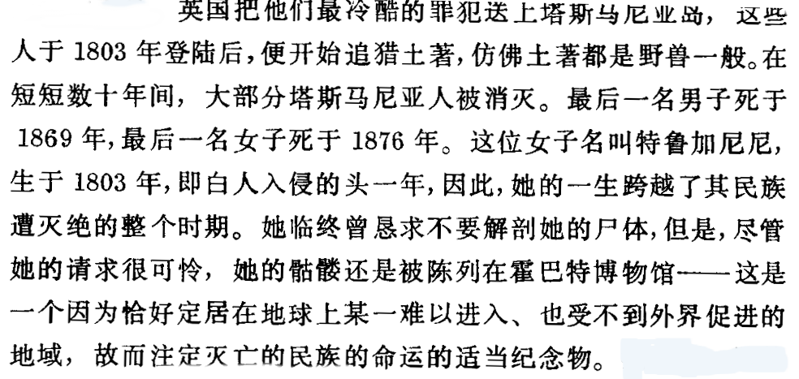

全球通史 ——1500年后的世界
勒芬·斯塔夫罗斯·斯塔夫里阿诺斯(希腊语原名:αριστερά Σταύρος Σταυριανός;英译:Leften Stavros Stavrianos)(1913年-2004年3月23日)，希腊族

- 1500年以前的历史，实际上是欧亚大陆的历史
- 欧洲基督教的扩张主义：为上帝服务和寻求黄金
- 条顿骑士团在12和13世纪用剑将基督教传播到普鲁士和波罗的海诸国
- {海外开拓和文艺复兴没啥关系；欧洲的成功得益于小政府？}
- 1315-1316：粮食歉收和饥荒；1348～1349：黑死病
- {中世纪（Middle Ages），指从公元5世纪后期到公元15世纪中期}
- {十字军东征之后，欧洲的消费者和生产者开始习惯于依赖外国的商品和市场}
- {任何人都能轻而易举地学到知识，在意大利}
- {1911辛亥革命==1914 WW1？}
- {19世记100年间，英国长期、稳定的国债收益表明：资本的力量表现为国家犯罪。帝国主义？}
- 谁也无法期望与强大的、非个人的合股公司竞争。？
- 最先的伊比利亚人的海外冒险事业就是由皇室直接鼓励和资助的结果
- 欧洲有一个强大的推动力：一个牟利的欲望和机会，一个使牟利得以实现的社会和体制结构
- 1500年的穆斯林世界：奥斯曼帝国，波斯萨菲帝国、印度莫卧儿帝国；
- 英法百年战争：1338～1453；意大利：威尼斯和热那亚之间的长期争斗。
- {保加利亚帝国1384，塞尔维亚帝国1389，拜占庭帝国1453相继被奥斯曼土耳其打败}
- {1516年叙利亚，1517年埃及}
- 对于古兰经上为阐明的问题，什叶派以独立的个人判断来代替传统。逊尼派反之
- 货币到了印度就埋藏起来，不再外流
- 新教徒和天主教徒不断残杀，而且两者都迫害犹太教徒{两个流氓都在骂对方是流氓，不幸的是他们都说对了}
- {1717年奥斯曼帝国：绝大部分有钱商人都是犹太教徒，他们建立团体，并控制了帝国的全部贸易}
- 土耳其谚语：鱼烂头先臭；穆罕默德：去寻求知识吧，哪怕远在中国
- 对世界贸易的控制使欧洲人极大的富裕起来。
- {帝汶岛的檀香，爪哇岛的药材和染料，印度的肉桂、胡椒和生姜}
- 荷属东印度公司1604,和英属东印度公司1637年抵达广州
- 1712年，皇帝：禁止中国人去东南亚经商和定居。
- 1745年，禁止基督教在中国的一切传教活动。
- 1603年德川幕府开端
- 1592、1597丰臣秀吉，两次远征朝鲜
- 1868年王政复古和明治维新
- 日本宫廷贵族和封建贵族{将军、大名、武士，家臣}占人口的6%
- 日本商人的文化形式：歌舞伎，木板画、描绘奢华生活的小说
- 到1900年，非洲尚有四分之一的内地未被勘探；
- 非洲种族并不明显：布须曼人{南非}，俾格米人{刚果和西非热带雨林}， 黑人{西非，撒哈拉}，高加索人{北非，阿拉伯}
- 即使在黑人占绝对优势的部落里，也会发现白皮肤绿眼睛的人。
- 阿拉伯人在非洲东海岸换取铁矿石运到印度南部炼成钢铁，再运到小亚细亚和波斯制成大马士革剑。
- 加纳帝国{700～ 1200}马里帝国{1200～ 1500}桑海帝国{1350～ 1600}{灭亡的原因：阿拉伯人的侵略}
- 中世记后期，西欧能领先于东欧，在于后者遭到连续的入侵；突厥人和蒙古人
七大洲面积
亚洲： 4458万平方公里，人口44亿。
欧洲： 1016万平方公里，人口7.4亿。
非洲： 3020万平方公里，人口12亿。
北美洲：2056万平方公里，人口5.6亿。
南美洲：1784万平方公里，人口4亿。
大洋洲：897万平方公里，人口0.3亿。
南极洲：1239万平方公里
- 印第安诸语言无论就其词汇量还是其他任何方面,均不原始
- 莎士比亚使用了24000个词,墨西哥的那瓦特语使用了27000个词
- 火地岛的雅干人虽被认为是世界上发展最迟缓的民族之一,却也拥有至少30000个词的词汇量
- 印第安人驯化的植物有100多种,同整个欧亚大陆驯化的一样多
- 美洲三大文明:玛雅文明(危地马拉,洪都拉斯)阿兹特克文明(墨西哥)印加文明(厄瓜多尔,智利)
- 工具仍然落后:石头,木头,兽骨;独木舟,远洋筏;没车
- 政治组织松散,部落制
- 印第安人缺乏免疫力,被时疫夺取大批人的生命
- 澳大利亚是世界上最孤立的一块大陆
- 每一种时髦理论都反映了当时时代的知识和偏见
- 历史对我们今天的意义:
- 相同的习俗不意味着相同的起源
- 人类文明是如何发展的?
15xx 西班牙 葡萄牙
- 伊比利亚半岛的西班牙和葡萄牙在16世纪的欧洲扩张中居首位
- 葡萄牙人的航海知识主要从意大利人那里得来的
- 由于稳定的,始终如一的政府的指导和支持葡萄牙人取得了优势
- 威尼斯人富裕的原因:印度-土耳其-意大利-西欧;香料贸易通道
- {集中->形成垄断性->掌握定价权->获取超额收益}
- {分散->谈判地位降低->失去定价权->收益下滑}
- {商业不一定表现为:中间控制两端;生产者->商人->消费者}
- 例子:工业资本家(专利权)
- 欧洲人是好斗的入侵者;
- 葡萄牙人用美洲的金银换取印度的香料和宝石
- 1513年,第一艘抵达中国口岸的葡萄牙船驶进广州港
- 1571年,西班牙征服菲律宾
- 阿兹特克首都:特诺奇蒂特兰城(今天的墨西哥城)
- 这些恃强凌弱的征服者,不能过安定的生活;陷入内讧中;
- 1517年,马丁-路德公开反对教会的一些做法; 使基督教分裂为天主教和新教
- 教皇亚历山大已将海外的世界在西班牙和葡萄牙之间做了划分
- 英国人论证说:尚未实际占有的权利不起作用
- 法国人坚决认为:他们(法国人)不会同意被剥夺海洋和天空
- 荷兰人因为与西班牙腓力二世的宗教问题而叛乱(1567),英国人支持荷兰人
- 1588年,西班牙无敌舰队远征英国失败;
- 英国人吸取西班牙人的教训,置身与大陆事物的外围
- 随着欧洲发展和生活水平的提高,迎合一般平民的大宗贸易增速远远高于迎合少数富人的奢侈品贸易
- 地产比商业和或工业财富更可靠
- 堪称财富的不是金银,而是产品
- 1600~1763年,荷兰\法国\英国赶上并超过了西\葡两国
- 英,法,荷的贵族乐意参加任何可能获利的商业冒险
- 英国的贸易造就绅士
凯恩斯:近代世界编年史上,从未存在过对投机者,暴发户和商人来说,如此持久如此可贵的一个良机,在这些黄金般的岁月里(1550~1650),近代资本主义诞生了
- 纽芬兰的附近盛产鱼_大概是15,16世纪欧洲贸易中最重要的商品(鳕鱼)
- 1555年,英国商人创办了莫斯科公司{探寻西北航道过程中}
- 1562约翰霍金斯:英国奴隶贸易的创始人(两次即为英国首富 )
- 如果贸易不能以和平合法的方式经营,必然要用其他手段进行{海盗&&私掠船}
- 1570年,教皇开除伊丽莎白女王的教籍
- 17世纪对荷兰来说是黄金世纪;荷兰人最先利用伊比利亚衰落的机会
- 地理位置优越:斯海尔德河,马斯河和莱茵河的入海口都在荷兰
- 弗兰西斯-德雷克:1577~1580 环球航行
- 1580年:西,葡两国王权结合
16 x x 荷兰
- 1602年荷兰人将各种私营贸易公司合并成一家国营公司___荷兰东印度公司
- 公司享有从麦哲伦海峡到好望角的贸易垄断权
- 还被授予开战和讲和
- 夺取外国船
- 建立殖民地
- 修筑城堡
- 铸币的权利.
- 1600年英国人组织了自己的东印度公司,但不敌荷兰人{英国公司从斯图亚特王朝的国王那里得不到什么支持}
- 1609年,荷兰与西班牙缔结安特卫普休战协定,便转身反对英国人
- 荷兰的商船队在1600年时就拥有了10000艘船是世界上最大的船队
- 荷兰人1612年,在曼哈顿岛建立了新阿姆斯特丹城
- 到1663年也只有1900人
- 起着基地和票据交换所的作用
- 英国人1664年,攻占
- 1621年,创办荷兰西印度公司.目的是开发西,葡两国在美洲殖民地的未曾牢固占有的财富
- 荷兰给西印度群岛(加勒比海)带来甘蔗
- 给东印度群岛带来咖啡
- 荷兰人将一些布尔人(农民)和法国的一些胡格诺派教徒移居南非好望角的殖民地
- 这些人的后裔占南非300万欧洲人的2/5;组成了唯一的持续至今的荷兰语言和荷兰文化的核心
- 18世纪荷兰衰落,一个原因:英法两国颁布了歧视荷兰人的法律
- 另一个原因:劳民伤财的战争:
- 1652 ~1674:荷兰与英国交战
- 1667~ 1713:荷兰与法国路易十四交战
- 忽视了海军建设:英国人在开战的前两年,夺得1700艘商船作为战利品
- 归根到底,18世纪荷兰让位于英国和法国,同20世纪英法让位与美国和苏联的原因相同
17 x x 英国 法国
- 18世纪的标志是:英国和法国之间争夺殖民地霸权的斗争
- 北美英属殖民地分三类:
- 生产烟草的弗吉尼亚
- 捕鱼,伐木,商业和皮毛贸易的新英格兰
- 丰厚回报的甘蔗种植园:英属西印度群岛
- 议会是一个英帝国的一个与众不同的特征
- 法国人以圣劳伦斯河流域为开拓殖民地的主要根据地
- 1682年,法国贵族拉萨尔划船沿密西西比河而下声称整个密西西比河流域为法国人所有,并命名为路易斯安娜,以纪念路易十四
- 英法争夺非洲的真正斗争知道19和20世纪才来临
- 17世纪初英国人被荷兰人逐出东印度群岛后便退到印度次大陆
- 此时已有的四个据点:加尔各答,马德拉斯;孟买,苏拉特
- 苏拉特是英国最早的贸易站
- 孟买是葡萄牙公主1662年嫁给查理二世时的嫁妆
- 1604年,法国组织了自己的东印度公司
- 17世纪,在印度居住,经商的欧洲人都是经莫卧儿皇帝允许的;18世纪形式完全颠倒了
- 1707年莫卧儿帝国开始崩溃;
- 1763; 斗争以英国的压倒性胜利告终;
- 法国感兴趣的不是海外殖民地,而是欧洲霸权
- 从16世纪起,法国波旁王朝家族就全力以赴 侵犯意大利,与奥地利和西班牙的哈布斯堡王室作斗争
- 直到19世纪,波旁王朝被推翻,法国才又致力于海外事业和海外扩张
- 移居殖民地的英国人比法国人多得多
- 1688年,大西洋沿海的英国人有30万;散居加拿大和密西西比的法国人只有2万
- 羊吃人的圈地运动:意味着更高的生产力和社会的混乱与不幸
- {1550~1650:英国工业原始积累;1760年后工业革命}
- {1618~1648:欧洲三十年战争,拉动军需物资的需求:英国发展采矿,冶金,化工}
- {呢绒制造业+采煤业+制糖+火药+玻璃+纸+盐......}
- 法国人生产金属和布匹器具倾向于制造奢侈品
- {英国的工业也提供了更便宜耐用的商品}
- 英国皮毛商人向印第安人提供价廉物美的毯子,水壶和火器换取后者的皮毛
- 英法两国在贸易和殖民地方面的竞争知道17世纪末才导致相互开战
- 1688年,大不列颠光荣革命
- 推翻依靠路易十四的斯图亚特王朝(天主教徒),迎来了荷兰的尼德兰联省执政,奥兰治亲王威廉三世(新教徒)
- 1689~1763:接连四次的英法战争
- 1689~1697:威廉王之战
- 1701~1713:安妮女王之战
- 1743~1748:乔治王之战
- 1756~1763:七年战争
- 前三次战争:路易十四被击败;普鲁士腓特烈大帝成功占领西里西亚.
- 法国人同印第安人一起同英国人在美洲作战
- 1763年,巴黎合约:
- 法国:圭亚那,圣皮埃尔岛,密克隆岛,瓜德罗普岛,马提尼克岛
- 西班牙站在法国一边:割让佛罗里达给英国
- {西班牙殖民地在美洲和菲律宾}
- {荷兰的殖民地在:东印度群岛}
俄国在亚洲的扩张
- 俄国人对西伯利亚的控制可与美国的西进运动相媲美
- 俄罗斯的扩展知道1895年中亚最后一个穆斯林汗国被征服为止
- 有句农谚:"俄罗斯不是一个国家,而是一个世界"
- 这个世界包括世界陆地表面的1/6{1706}
- {中国1/15; 960万平方公里}
- 乌拉尔山脉:山峰多呈浑圆状，以低、中山为主，一般海拔500～1200米。最高峰纳罗达峰海拔1895米。山脉西坡较缓，东坡较陡
- 由于地形平坦,俄罗斯的河流普遍漫长,宽阔.没有湍流的阻碍
- 大草原上的亚洲游牧民族 Vs 森林区的斯拉夫农民
- 1792年，土耳其人接受雅西条约；从库班河到第聂伯河的整个黑海北岸归俄国
- 由于欧洲移民中男子比妇女多得多，他们通常娶印第安女子为妻或作情妇
- （美洲）黑人的迁移持续到19世纪中叶，使奴隶的总数达到1000万左右
- 西班牙人是果园爱好者
- 罗马帝国为支付中国丝绸和印度纺织品而耗尽黄金
- 16,17,18世纪时，亚洲仍然对欧洲商品不感兴趣
- 欧洲人是世界贸易最早的中间人
- 西北欧作为世界创业者，得到大部分利益，而损害了其他地区
塞拉普披肩（英语：serape），又称塞雷普毛毯。一种墨西哥男性穿戴在肩膀的披肩，条纹颜色鲜艳。这种毛毯状的长披肩，通常颜色鲜艳，末端有流苏，在墨西哥流行，特别是男性。典型颜色是黑色、灰色、棕色或两种色调的组合，这取决于不同地区羊群的自然颜色。
- 伏尔泰用一幅孔子的画像装饰其书斋的墙
- 德国哲学家叔本华着迷于印度哲学
- 到19世纪，欧洲人以强大的帝国和股份公司在政治和经济上控制了全球
- 欧洲用四个世纪建立起对世界的统治；（1500～1900）只用40年就土崩瓦解了
- 1914年，欧洲诸强国已经吞并整个非洲
- 制造业和商业总会在教会和国王干预最少的地方最繁荣
- 科学革命是现代世界和现代思想的起源
- 匠人关心的是技术上的实际知识，而不是科学上的潜在原因
- 文艺复兴的另一面：对巫术和魔鬼的研究
- 技师和专家之间的合作
- 15世纪的意大利在经济和文化上是最先进的国家
- 培根使用归纳法，从事实开始，然后进行到普遍性原理
- 1662年英国改组成立皇家学会
- 法国，1666年由路易十四创立了一个科学院
- 牛顿：1642～1727{1642年伽利略去世}
- {像博物学，收藏，艺术等等的爱好明显是有钱人的专利}
- 植物，动物，昆虫，
- 所以，尽量不要问别人：你有什么爱好呀？
- 化学革命：1770～1850
- 一战时，德国人拥有了世界上最先进的化学工业；实际垄断了合成染料的生产
- 生物学革命：1850～1914
- 进化论，
- 不管发生什么事，我们已得到马克沁机枪，而他们却没有——英国作家希来儿 贝洛克
- 科学不仅深深影响西方人的生活方式，并且深深影响了他们的思想方式
- 科学是一个民族进步的起因{深刻影响国际政治的是：军事科学}
- 人们在巨大城市的人行道上互相推挤；人们不自在的隐居在高大公寓的小房间内沉思或空想
- 工业革命首先开始于英国；{纺织，采矿，冶金，运输}
- 伦敦证券交易所：1698年建立
- 巴黎正式的证券交易所直到1724年才有
- 上海证交所：创立于1990年11月26日
- 蒸汽动力在希腊化时代的埃及就得到应用，仅用来开关庙宇大门
- 1763,格拉斯哥大学的技师 詹姆斯 瓦特 只是改良了蒸汽机
- {把发动机放在车上：汽车，汽车放在铁轨上：火车；发动机放在船上：轮船；放在滑翔机上：飞机；发动机放在机器上：大机器工厂}
- 1870年以后，所有工业都受到科学的影响
- 1830～1870;工业革命：英国->比利时；1870年大多数比利时人已居住在城市；
- 英国->比利时->法国->德国,美国->俄国,奥匈帝国,意大利->日本,加拿大,澳大利亚
- 1871年以后,德国工业以巨人般的步伐前进;1914年德国在钢铁,化学和电力工业方面超过欧洲所有国家;只有采煤和纺织落后于英国;
- 商业资本主义{东印度公司}->工业资本主义{福特}->金融资本主义{摩根}->?
- 工作时间长倒是其次的,关键是工作是单调乏味的
- 普遍的繁荣所带来的收益的确缓缓的淌下来一些,但大部分在顶层被吸收
- 建立在金钱基础上的阶级分化很大程度上影响了欧洲政治的格局
- 富裕阶级倾向于保守,中产阶级倾向于自由主义,有政治觉悟的工人倾向于社会主义
- 一战前的15年中,150万犹太人从俄国逃往美国
- 澳洲,美洲已经欧洲化了
- 英国1840年获得新西兰,1842年获得香港;
- 法国1830~1847征服阿尔及利亚;1858~1867征服交趾支那
- 1914年.欧洲已经成为世界的银行家
- 中国,奥斯曼帝国和波斯就是例证;他们名义上都是独立的.实际上经常遭受掠夺,蒙受耻辱,受到强国直接或间接的种种方式的控制
- 传统的帝国主义包含剥削,但不包含根本的经济变化和社会变化
- 英国不希望,印度成为第二个美国;印度成为英国的原料产地
- 对于蛋糕体积的增大带来的好处,人们没有不同意见,争论集中在如何切上
- 世界工业生产在1860~1890年间增加了三倍;
- 在1860~1913年间增长了7倍
黑格尔:一旦个人和民族使关于充分发展的自由的抽象概念进入他们的头脑,就没有什么比这更具有控制不了的力量.
- 政治革命:人们不再认为政治高于人民,也不再认为人民在政府之下
- 政治的目的就是团结,去政治化的结果就是分裂{有前提}
- {英国\美国\法国.三国政治革命}
- 领导工人的知识分子发展出一种新的思想____社会主义
- 直接挑战资产阶级的自由主义
- 同时,民族主义 崛起{民族国家?民族主义就是国家主义?}
- 民族主义->沙文主义->军国主义{社会达尔文主义}
-
- 1642~1688:英国国王与国会(资产阶级)战争时期;以光荣革命结束
- 1642~1645:内战:国会的克伦威尔的新模范军胜利告终
- 1645~1649:清教徒中,克伦威尔的温和派战胜了激进派
- 1649~1660:克伦威尔,共和政体
- 1660~1688:王政复辟,查理二世,詹姆斯二世
- 1689,威廉接受了权利法案
- {多头管理==没有管理,缺乏管理}
- 给普通人一个机会,让他们尝尝权利的可能性并说出自己的见解,是英国内战的伟大成就之一
- 由于启蒙运动(1789年之前的一个世纪),人们开始普遍认为人类的状况会普遍改善,因此每一代的境况都会比前一代好些{理性的力量}
- 经济口号是自由放任,反对重商主义的控制{亚当 斯密}
- 宗教方面:消灭宗教狂热和不容 异说{无神论者,不可之论者,自然神论}
- 政治方面:社会契约论:约翰洛克,卢梭
- 我们决心把愚蠢,奴性的动物改造成有知识,人性的人
- 法国的革命同古往今来的其他革命一样,先是温和的开始,逐渐的变得愈来愈激进
- 1789年5月5日,法国三级会议召开,导致的不是贵族的胜利,而是掀起一个巨大的革命浪潮
- 拯救法国革命的不是街头贱民,而是由店主和作坊老板组成的小资产阶级
- 7月14日攻占巴士底监狱;里面关着7个入狱者{两个精神病患者,4个弄虚作假者,一个变态的青年人,由其家庭托付并支付费用}
- 自由平等博爱的革命口号传遍了整个欧洲
- 拿破仑推翻督政府,1799~1804年作为第一执政,1804~1814年皇帝
- 说着同一种语言对国家至关重要
- 两个特点:国内改革和军事战役
- 组织国民教育体系{公立小学,法语代替方言},建立法兰西银行;创立国旗,国歌和国家节日
- 1812年,入侵俄国
- 了解世界真相,意味着一场深远的政治革命
- 民族主义是近代欧洲历史上的一种现象
- 18世纪末以前的欧洲,人们一直把国家和君主本人混为一谈
- 民族主义全球泛滥:
- 1821年希腊独立
- 1830年比利时独立
- 意大利人在1820,1830,1848年三次起义失败,在1859~1871年间建立了一个独立,=统一的国家
- 普鲁士领导的德国人与1871年击败法国,建立德意志帝国
- 1878年,塞尔维亚人,罗马尼亚人,黑山人已赢得独立
- 1908年保加利亚人赢得独立
- 一战后,波兰,捷克斯洛伐克,阿尔巴尼亚,南斯拉夫立国
- 二战后的二十年中有50多个国家赢得独立
- 一战让德意志帝国,奥匈帝国,俄罗斯帝国,土耳其帝国,遭到毁灭
- 自由主义 :信仰自由,人身安全,财产安全,言论自由,出版自由,集会自由,三权分立目的在于制止暴政
- 民主的自由主义承认国家对全体公民的福利承担责任
- 西欧各国由德国带头进行社会改革:
- 老年养老金
- 最低工资法
- 疾病,事故和失业保险
- 工作条件与工作时间的法规
- 自由主义强调个人和个人权利;
- 社会主义强调社会和社会的集体福利
- 从文明兴起以来,政治权力和经济权力一直集中在少数人手上
- 把人类从约束人的封建制度中解放出来;把人类从剥削人的资本主义制度中解放出来
- 法国人圣西门(1760~1825)国家把资本借给合作社
- 法国人傅立叶(1772~1837)干等了12年
- 英国人欧文(1771~1858)新拉纳克模范村
- 现代社会主义之父 马克思(1818~1883)阶级斗争是社会变革的唯一手段
- 三个基本学说:唯物史观(经济史观)\阶级斗争学说和剩余价值观念
- {剩余价值:根本问题是商品的定价基础是什么?劳动量?供需关系?}
- 马克思的学术已经成为决定历史进程的最重大的力量之一
- 工人变得越来越富裕,也就越来越满足于现状
- 1864年,建立国际工人协会,即 第一国际;1873年分裂
- 1889年社会党国际,即第二国际在巴黎成立
- 到1914年,有27个国家的社会党,1200万工人成员
- 口号:鼓动,教育,组织
- 一战让修正主义付出了代价:大多数成员证明,他们首先是民族主义者,其次才是社会主义者;数百万工人死在壕沟两侧
- 布尔什维克组织了第三国际,即共产国际
- 地理因素:法国巴黎公社->俄国布尔什维克->中国共产党
- 这种一般格局忽略了无数的细微差别和例外
- 俄国的思想家一代一代的以民族方向和民族目标这一基本问题来烦扰自己
- 弗拉基米尔大公在990年前后决定接受拜占庭东正教形式的基督教
- 东正教和天主教在1054年分道扬镳
- 在1825~1855年尼古拉一世统治的三十年,爆发了500多次农民骚动
- 继任者亚历山大二世把解放农奴当作代替革命的唯一方法
- 1913年俄国生产的铁和法国一样多,生产的煤是法国的3/4
- 1917年,投入俄国的5亿英镑中,1/3以上由外国投资构成
- 外国资本控制了一半的煤和石油产量
- 60%的铜和铁矿产量
- 80%的焦炭产量
- 列宁的民主集中制:民主讨论,决策;集中执行
- 彼得大帝派丹麦血统的 维图斯 白令船长前往美洲大陆{1728,1740两次探险}
- 1823年门罗主义发表
- 1867年,俄国以700万美元的价格将阿拉斯加卖给美国.每英亩土地价格不到两分钱
- 1904年2月8日:日俄战争爆发;1905年9月5日结束
- 1905年1月22日:流血星期日:第一次俄国革命爆发的火星
- 世界目睹了整个民族进行罢工的非凡景象
- 沙皇小父亲的形象瓦解
- 是1917年革命的彩排
- 国际竞争并不等待我们
- 对外国工业过于巨大的依赖;技术的落后
中东
- 奥斯曼帝国:
- 基督教居民的巴尔干半岛
- 穆斯林土耳其居民的小亚细亚
- 穆斯林阿拉伯民族
- 巴尔干诸民族在土耳其的统治下生活了四个多世纪
- 巴尔干的三个民族:塞尔维亚人,希腊人,保加利亚人在1912组成联军,赶走土耳其人
- 土耳其人1913年撤出巴尔干半岛
- 1882年,英国远征军控制了埃及
- 1916年,阿拉伯大起义
- 1830,法国入侵阿尔及利亚
- 1881,法国接管突尼斯;1912年接管摩洛哥
- 1911年意大利入侵的黎波里塔尼亚
波斯人
- 大约在19世纪后期,波斯开始受到无所不在的西方的影响
- 起初借用西方的军事技术
- 然后是,更强的中央集权,一个新的官僚机构
- 西式学校
- 第一届波斯议会于1906年10月在德黑兰召开,制定了一个自由主义的宪法
- 1907年,英俄协定;英国与俄国国分割了波斯
印度人
- 在英国人之前,印度已经为雅利安人,希腊人,土耳其人,莫卧儿人所统治
- 村社是小小的共和国,几乎拥有他们心里想要的一切东西
- 一代人也许死亡了,但下一代人会回来
- 英国人能够挑拨一个印度王公反对另一个印度王公
- 1764年,英国东印度公司击败莫卧儿军队后,被授予"底瓦尼"
- 人们已经明白,策动革命是天下最有利可图的把戏
- 到1800年,仅剩下英国人和马拉塔人,到1818年,马拉塔人被打垮.
- 19世纪中叶,英国人成了整个印度的主任
- 1819年斯坦福德 莱佛士占据了新加坡
- 在1824,1852,1886年英国三次进攻缅甸,最终吞并了该国
- 1839和1879,英国两次入侵阿富汗;组织俄国在中亚的扩张
- 法国人政府印度支那,1883年,中国放弃对印度支那的宗主权要求
- 暹罗(泰国)成为英法殖民地的缓冲
- 荷兰人在17世纪从葡萄牙人那里占领了东印度群岛;
菲律宾 补充
- 西班牙殖民者于1571年占领马尼拉
- {1898年4月:美西战争爆发, 1899年1月 23日宣布菲律宾共和国成立。2月美国发动侵菲战争，镇压菲律宾革命（见菲美战争}
- {1901年阿奎纳多被俘投降;菲律宾又沦为美国的殖民地}
- {1941年12月7日太平洋战争爆发。1942年5月，驻菲美军先后投降，日本军国主义侵占整个菲律宾}
- 1946年7月4日美国宣布给予菲律宾独立;美国保持在菲律宾的经济和政治方面享有特权地位。
- 1833年,英国东印度公司失去了商业垄断权利
- 《东印度公司股息救赎法案》生效后英国东印度公司于1874年1月1日解散
- 印度民族大起义(1857.5.10~1858.7)印度人屠杀了许多俘虏,英国人呢烧毁村庄并不分青红皂白的杀死居民
- 英国在印度的地位建立在:军队,官僚机构,印度王公
- 近代印度之父: 拉姆/莫汉/罗伊 1772年出生于婆罗门家庭;1833年去世
- {古 印度 婆罗门教的早期文献，包括《黎俱》、《夜柔》、《娑摩》和《阿闼婆》四部本集及《森林书》、《奥义书》、《法经》等}
- 印度比其他任何主要地区都更无选择的承受西方的影响
中国和日本
- 军事领域->经济领域->社会文化领域->政治领域
- 虽然失败的打击迫使他们采取某些措施,但只是做做样子而已
- 工具上的西化必然导致思想和制度的西化?
- 由于自己的官位和既得利益,只需要"传统范围内的改革"
- 慈禧从1860年开始掌握中国政治
- 1898年,光绪皇帝百日维新
- 1866~1925:孙中山
- 我是一个苦力,一个苦力的儿子
- 我出身贫穷现在仍是个穷人,我始终同情那些为生计而挣扎的民众
毛泽东在《人民日报》发表《纪念孙中山先生》
现代中国人，除了一小撮反动分子以外，都是孙先生革命事业的继承者。
孙先生是一个谦虚的人
他全心全意地为了改造中国而耗费了毕生的精力，真是鞠躬尽瘁，死而后已。
像很多站在正面指导时代潮流的伟大历史人物大都有他们的缺点一样，孙先生也有他的缺点方面。这是要从历史条件加以说明，使人理解，不可以苛求于前人的
- 1905年,孙中山在日本东京组织同盟会
- 袁世凯(1859~1916)
- 日本精神,中国知识;东方道德,西方技艺
- 允许荷兰人继续留在日本经商,主要是为了向他们打听外部世界的情况
- 教育方面,日本明确规定,其目的是促进国家利益,而不是发展个人
- 在德国军事代表团的帮助下,日本发展了一支陆军;在英国人的帮助下建立了一支海军部队
- 1894年日本战胜中国,五年后,日本成为第一个砸碎西方控制的锁链的国家
- 每个民族必须为自己去掠夺,软弱和胆小者将一无所获
- 1900义和团运动期间,俄国占领整个满洲
非洲
- 英国1881年占领埃及
- 19世纪最后二十年,欧洲列强瓜分了整个大陆
- 欧洲的奴隶制从一开始就主要是经济性质的
- 控制奴隶贸易的是
- 1870年前,欧洲列强在非洲只占有一些无关紧要的地区
- 刚果人在比利时,利奥波德所统治的1885~1908年下降了一半(2000万->1000万人)
- 尼日利亚的英国人和喀麦隆的德国人能有效的向内地扩张;西非的其他地区已变成法国领地
- 1899年春,英国人占有了上尼罗河
- 16世纪以来,葡萄牙人占据着莫桑比克,安哥拉,几内亚;德国,坦噶尼喀;英国肯尼亚
- 意大利:厄立特里亚,索马里,利比亚
- 1924年,除西海岸(利比里亚)这个小共和国外,埃塞俄比亚是整个非洲大陆唯一独立的国家
- 工业化了的欧洲国家不再需要奴隶
- 1867年在南非 金伯利发现金刚石,1870年开采;在刚果发现了金,铜,金刚石
- 欧美一些公司刚果,喀麦隆等地购买了土地建立大种植园,费尔斯通 Firestone 就是一例;
- 哈维·塞缪尔·费尔斯通,Harvery Samuel Firestone美国橡胶和轮胎制造商。橡胶大王
- 津巴布韦共和国（The Republic of Zimbabwe），原称罗得西亚（1980年前
- 非洲人卷入世界范围的货币经济中
- 传教士带着改变非洲人生活方式的公开目的来到这里
- 他们运用了三大工具:教育,医学,宗教
- 他们常常教导学生说:传统的生活方式是原始的,错误的
- 教会教育鼓励个人主义
- 各个殖民地的边界完全取决于欧洲的势力平衡
- 在索马里,有英国,法国,意大利人统治,还有少数在埃塞俄比亚境内
- 受过教育的非洲人是最早的民族主义者,
- 撒哈拉以南非洲很多地方仍保持传统的生活方式
美洲
- 到1835年,中美洲和南美洲仅有480万欧洲移居者,北美却有1380万
- 1900~1910,每年有100万人迁徙
- 印第安人或黑人从未在新大陆任何一个较大的国家里占据统治地位
- 南非黑人因生活在一个黑人占压倒之势的非洲大陆上而充满信心
- 在弗吉尼亚,移民早在1619年就获准选举,地方议会
- 1807年,委内瑞拉商店将卢梭的社会契约论一页页撕下来用于包装食品
- 在法国革命和拿破仑战争期间,欧洲的西班牙最先被占领;其殖民地只好子谋生路
- 南美北部伟大的革命领袖是西蒙 玻利瓦尔将军,其坚持战斗了15年
- 南美南部的杰出领导人是乔思 德 圣马丁将军,其于1816年解放阿根廷,参与了智利和秘鲁的解放
- 墨西哥的革命始于1810年,由克利奥牧师 曼纽儿 伊达尔戈领导,被保守分子镇压;
- 1822年9月,国民代表大会宣布墨西哥独立
- 1807~1808法国占领西班牙后,国王约翰六世逃到里约热内卢;1821年返回里斯本;其子多姆 佩德罗负责处理巴西公共事务;并宣布巴西独立
- 牙买加1962年独立之前一直由英国统治
- 维京群岛1917年之前由丹麦人统治
- 古巴,1898年前由西班牙人统治
- 拉丁美洲大多数的所谓的"革命"都仅仅是名义上的革命,不过是一个军事独裁者取代另一个军事独裁者
- 澳大利亚殖民地化始于1787年,由于失去了13个殖民地,澳大利亚成为新的罪犯倾倒场
- 1885年,加拿大建成第一条横穿大陆的铁路
- 澳大利亚,牧羊业长期以来是经济的主要支柱
- 1851~1860年的十年中,澳大利亚的黄金占世界黄金产量的39%(美国:41%)
- {美国,加拿大,新西兰,澳大利亚,拉美等新大陆国家 经济上的欧化}
- 1820~1830年间,美国总出口的36%运往英国,进口的43%来自英国
- 随着种族,经济,政治上的欧化,带来的必然是文化上的欧化
- 黑人占美国人口的10%,印第安人则占0.5%
- 美国人是积习很深的修补匠,经常从事小装置的发明,以加快工作速度
- 19世纪的美国人忙于制服荒原,无暇假装斯文和讲究美学
- 法裔加拿大人占加拿大人口的1/3
- 二战后,澳大利亚有90%的人,新西兰有98% 的人是英国血统
总结
一战
- 以亚洲人的观点来看,一战是欧洲社会内的一场内战
- 一战后,欧洲对世界的控制明显减弱
- 1914年6月28日,弗兰兹 斐迪南大公遇刺{塞尔维亚青年:加弗里洛 普林西普;1911年成立于贝尔格莱德的黑手社}
- 最重要的背景因素有四个:
- 经济上的竞争{关税战}
- 1888意大利与法国
- 1894俄国 德国
- 1906~1910:奥地利 塞尔维亚
- 英国在拉美,中东和远东彻底输给了好斗的德国商人
- 两国紧张关系刺激了刺激海军军备的竞赛
- 殖民地的掠夺
- 德国人痛骂英国人是站着茅坑不拉屎的自私鬼
- 几乎所有强国都卷入这场对绝对统治权的争夺
- 国家之间结成防御性的盟约
- 相冲突的联盟体系
- 英法俄{塞尔维亚背后是俄国,俄国背后是英法;协约国}
- 德国,奥匈,意大利{同盟国}
- 德,奥,意三国同盟无论就其宗旨和条款来说都绝不是侵略性的
- 势不两立的民族主义愿望
- 东欧:捷克人,斯洛伐克人,罗马尼亚人,波兰人,斯洛文尼亚人
- 克罗地亚人,塞尔维亚人,奥地利人,匈牙利人,意大利人
- 1890年,俾(bi3)斯麦辞去宰相职务
- 1913年 波斯尼亚是革命组织纷纷成立的一年,人人都在叫嚷:行动,行动,不要再空谈了
- 1389年6月28日:土耳其人征服了中世纪的塞尔维亚帝国
- 在指定的路线上,至少有6位刺客身带炸弹和左轮手枪等候"大公夫妇"
- 德国人以为萨拉热窝的危机只会局限于某一地区,其实,大变动时期已经来来临
- 7月28日,奥匈帝国向塞尔维亚宣战
- 7月30日,俄国全国总动员{俄国个阶层都团结在政府的周围，深受民众欢迎。列宁是唯一的反调，列宁在瑞士，托洛茨基在纽约}
- 8月1日,德国向俄国宣战
- 8月3日,德国向法国宣战,同时入侵比利时
- 8月4日,英国对德国宣战
- 兴高采烈的群众和开拔的士兵高唱《马赛曲》{法国}《在故乡》{？}《It's a Long Way to Tipperary》{英军军歌}等歌曲交战双方的军列上都用粉笔写上：圣诞节回家的题词
- 所有的民族都满怀信心的期待之一场短暂而又胜利的战争
- 8月4日，德国越过比利时边境，法国进攻阿尔萨斯-洛林；
- 因为没有足够的机枪，法国人损失惨重，停止前进
- 德国穿过比利时，进入法国北部，到达马恩河；9月2日到达离巴黎只有25里的尚蒂伊；
- 德军诸部队未能协调一致，第一集团军和第二集团军形成30里长的间隔，霞飞将军调集军队，猛攻德军这一弱点
- 造成僵持局面的原因:防御性武器从一开始就优于进攻性武器
- 此后三年,战线{西线}的任何一方移动都未超过10里
- 前四个月里,西线伤亡人数:德国70万,法国85万,英国9万
- 1915年5月1日,德奥联军在敌军防线打开了一个30里长的缺口
- 同盟国各部队已平均推进了200里
- 俄国军事上伤亡250万人,丢失了15%的领土,10%的铁路
- 30%的工业,20%的平民人口,沙俄专制政权遭到了再也无法复原的打击
- 1914年11月2日,土耳其加入同盟国;达达尼尔海峡对协约国关闭
- 1915年3月18日,一支由14艘英国战舰和四艘法国战舰组成的分舰队
- 第一天,三艘战舰被击沉,两艘战舰受重创(水雷+沿海炮火)
- 英国海军将军认为损失惨重,下令撤退
- 土耳其人已经用掉大部分弹药;对坚持到第二天已不抱希望(与德国主要官员报告结论相同)
- 4月25日,协约国在加利波利海滩登陆,只获得几个浅滩立足点,1916年1月永久撤退
- 1915年10月14日,保加利亚加入同盟国
- 10月6日,德国,奥地利,保加利亚军队三面进攻塞尔维亚,到年底整个国家被占领
- 意大利表面上是同盟国的盟友,战争一开始,意大利决定保持中立,1915年4月29日,意大利签署 《伦敦条约》同意在一个月内加入战争，站到了协约国。
- 1916年2月21日，凡尔登战役爆发；德国人在八里长的战线上集中了1400门大炮，进攻一直持续到7月以前，之后转为防守
- 与凡尔登战役同时，索姆河战役爆发，经过一周的炮轰之后，英军6月1日开始进攻；厮杀一直持续到11月
- 英军第一天就损失了6万人，包括一半以上的军官{两次世界大战中最高的伤亡率}
- 英法的进攻最多向前推进了7里
- 英军损失了40万人，法军损失了20万人，德军损失了50万人
- 1916年，俄国人{将军 勃鲁西洛夫}在东线的奥地利撕开了一个200里长的口子，吃惊的俄国人让所有后备军涌进了这个口子。
- 1916年8月27日，罗马尼亚加入协约国参战{原来中立}
- 1916年年底，同盟国占领罗马尼亚2/3的领土，包括首都
- 希腊成为巴尔干半岛唯一中立国；1917年，协约国采取各种违法措施：封锁希腊港口，扣押希腊船只，登陆比雷埃夫斯港口等。6月27日，希腊加入协约国参战。{战争到来没有中立？}
- 1917年，尼韦勒将军接替谨慎的霞飞将军，鼓吹新型的闪电战
- 德国用东线部队的兴登堡和鲁登道夫取代法金汉，西线采取守势，使用海上的潜艇战。
- 兴登堡将部队撤回到一个新的设防阵地：齐格菲防线（兴登堡防线）
- 尼韦勒坚持进攻，造成法军起义，贝当将军取代尼韦勒；采取守势；
- 黑格将军指挥的英国军队，发动的战役同样损失巨大；
- 兴登堡的防御战略，使协约国蒙受40万人的伤亡，德军伤亡25万
- 1917年7月19日，德国国会以212票对126票通过《和平决议》
- 1917年11月21日，奥匈帝国受人尊敬的，年迈的皇帝弗朗西斯 约瑟夫去世，继位的年轻皇帝查理派妹婿到法国议和
- 1917年，俄国3月和11月爆发了两次大革命{列宁}；
- 1918年1月8日 美国参战{总统威尔逊 《十四点和平纲领》}
- 1914年8月23日，日本加入协约国参展，只是占了太平洋上几个德国殖民地
- {世界第一流工业强国的现代化战争}
- 布尔什维克革命只在冬宫发生了流血事件：伤亡人数：一个红军战士，五个红军水兵
- 1918年3月3日，列宁接受了《布列斯特-立陶夫四克和约》，俄国退出一战
- 美国1916年3月～1917年2月：美国武装入侵墨西哥
- 为了支付军用物资，各协约国先是给现金，然后卖掉了他们在美国的公债和股票，最后大笔大笔的借款
- 1918年 建造的新船总吨数首次超过了被击毁船只的总吨数
- 土耳其人，1918年10月30日接受停战协定
- 11月3日 奥匈帝国停战委员会接受了意大利最高司令部提出的条件。
- 11月11日，国王查理放弃了他的最高权利，古老的哈布斯堡帝国灭亡
- 11月11日 德国签署停战协议，西线战事结束
- 第一次世界大战历时4年3个月，涉及30个主权国家，推翻四个帝国，产生7个新的国家，战斗员死亡850万，非战斗员死亡1k万，直接经济损失1805亿美元，简介经济损失1516亿美元
- 一战，英国失去了其对外投资的1/4,法国失去了1/3,德国全部失去了。
一战影响
- 如果我们要恢复自己权利就必须诉诸武力——孙中山
- 1925年 12月15日，礼萨 汗接受王位，建立了巴列维王朝
- 民族主义的象征是1934年改波斯为伊朗
- 1914年，印度支持英国参战，至少有90万印度人在英军中当战斗员，还有30万印度人当劳工
- 甘地的讲话朴素而富有感染力，1914年英国人以9K名行政官员和69K名士兵就统治了3亿印度的人
- 苏联放弃了其在土耳其，波斯，中国的特权{内战的选择，国外的起义减小苏联 国内的压力}
- 1923年1月，孙中山和苏联代表 阿道夫·越飞 一致同意国共合作
- 黄埔军校的校长是孙中山的参谋长，刚从莫斯科红军学校回国的蒋介石
- 1926年5月，蒋介石担任北伐总指挥
- 1943年，所有外国都已放弃了在中国的治外法权
- 长征368天（1934.10.16～1935.10.26） 9万人突围，7k人幸存下来
1929年前的欧洲
- 起先布尔什维克遭到一个又一个失败；旧的俄国军队已经四分五裂
- 国防人民委员 列甫·托洛茨基逐步建立起一支新的军队：红军
- 1918年底，红军人数约50万，在24条不同的战线上作战
- 克里米亚半岛 从前是沙皇和大公的游乐地
- 白军失败的原因：协约国的不团结，左派革命党人和右翼分子的对立
- 红军成功的原因：党组织，契卡，铁路，农民；
- 相互的不信任既深刻又持久
- 到二次世界大战时，整个中欧全部处在独裁统治之下；除了捷克斯洛伐克
- 法西斯主义是1922年10月随着墨索里尼向罗马进军才突然的戏剧性的出现
- {从欧洲到亚洲，共产党由失败逐渐变得成功说明：革命的成败不仅在于；压迫的强弱，还在于力量的对比}
- 英国社会传统的价值观：英国各大学最能干的毕业生很可能进入行政部门而不是经商
- 两次世界大战间的英国笼罩着不景气
- 数百万家庭靠国家救济维持生活
- 整整一代人在没有就业机会的环境成长
- 失业者变得情绪低落，对前途不报任何希望
- 法国有一个十分平衡的经济，因此，不像以农业或工业为主的国家那样容易受到伤害
- 法国先前通过贷款而不是税收来筹集资金，战后也需要贷款来重建家园
- 有些政府吧对外冒险作为改变过捏紧张局势的手段
- 1929年以后的几年充满了忧虑和失望,危机一个接着一个,最终导致二战
- 列宁:我们在夺取政权后便知道,不存在将资本主义制度改造成社会主义制度的现成方法
- 土地属于我们,面包却属于你们,水属于我们,鱼却属于你们,森林属于我们,木材却属于你们___苏联某农民
- 苏联提取了40%的国民收入用于再投资;美国只提取了20%
- 1929年的开始,美国似乎日益繁荣,实业家,学究式的经济学家和政府领导人都表示对未来充满信心
- 1924年,美国的黄金储藏占世界的一半
- 美国经济的不平衡和世界经济的不平衡一样严重,其根本原因在于工资落后于不断上升的生产率
- 1930年每个农业工人的收入还不到非农业工人收入的30%
- 1929年,5%的美国人得到全部个人收入的1/3;二战结束时为1/6
- 低下的购买力无法支撑如此高比率的资本投资
- 在危机的前三年:美国钢铁公司的股票从262下降到22
- 通用汽车的股票从73下降到8
- 到1933年,工业总产量和国民收入暴跌了将近一半
- 美国金融公司不得不收回他们在国外的短期贷款,并拒绝考虑新的贷款
- 1931年9月,英国放弃了金本位制;两年后美国和几乎所有大国也都这样做了
- 除苏联外的世界工业生产指数:
- 1929年100
- 1930年86.5
- 1931年74.8
- 1932年63.8
- 前几次危机中最大下降是7%:1907~1908
- 1933年3月,美国失业人数保守估计1400多万;占全部劳动力的
- 英国失业人数300万;比例大致与美国相同
- 德国失业人数至少600万;工会统计:的人完全没有工作;的人只有非全日性的工作
- 法国由于工农业较平衡受影响最小,失业人数从未超过85万{未包括农村}
- 东欧的一些农业国,许多工人离开城市,到农村与他们的亲属共患难
- {美国劳动人口现在1.5亿}
- 约翰 斯坦贝克 书:愤怒的葡萄
- 任何人现在找到工作的机会都不会比爱尔兰抽彩中奖的机会高
- 1939年,南斯拉夫德里纳地区调查报告:21,9179个家庭中,有46.4%的家庭没有床,54.3%的家庭没有任何种类的厕所,51.6%的家庭以泥地为地板
- 德国,1923年通货膨胀席卷全国消灭了各阶层的储蓄金
- 如何解决大萧条? 左派赞成增加失业救济,右派坚持削减经费和平衡预算
- 希特勒:我认为现在的德国既不是一个民主国家,也不是一个共和国,而是马克思主义者和犹太人的国际猪圈
- 1919年希特勒{波希米亚下士}加入德国国家社会主义工人党
- 1923年,希特勒和陆军元帅鲁登道夫参加了慕尼黑啤酒馆暴动;时年35岁,在狱中写下:我的奋斗
- 纳粹党的政治纲领为小职员和破产的商人提供了安慰和希望
- 1933年1月4日,希特勒会见了科隆的银行家 库特 冯 施罗德
- 1933年1月30日,希特勒成为一个由民族党人和纳粹党人组成的联合内阁的总理
- 希特勒本人的才能,各种既得利益集团给予的帮助,对手们缺乏远见
- 各国的自卫措施:
- 较高的关税
- 严格的进口限额,结算协定
- 货币管制条例
- 双边贸易协定
- 大规模重整军备{既提供想象中的安全又提供就业,美,德国相同}
- 经济上的自给自足逐渐成为通常公认的民族目标
- "生存空间" 希特勒新创造的术语
- 1923年大地震摧毁了东京的地区,造成16万人的伤亡;20亿美元的财产损失
- 财阀 Zaibatsu:Zai 富豪 batsu集团.{三井 三菱 住友 安田:二战时控制了日本所有资本总额的}
- 日本工业主要依靠外国市场销售产品,这种依赖在大萧条到来时带来了灾难,29~31年间,日本对外贸易减少了50%
- {满洲事件(日本侵略东北)表明通过武力,对外扩张来解决国内问题是可能的,为德国的扩张埋下伏笔}
- 新德意志帝国必须再次使自己沿着过去条顿骑士团的道路(东扩)前进,用德意志的剑为日耳曼人获得耕地,为这个民族获得每日食粮
- 苏联领导人认为国联是掠夺成性的各帝国主义强国保持一致的组织
- 1935年10月3日,墨索里尼的军团入侵独立的非洲王国:埃塞俄比亚
- 1936年,意大利在牺牲了3k人和10亿美元之后,墨索里尼赢得了一个拥有35万平方里土地和1000万人口和丰富的自然资源的帝国
- 埃塞俄比亚时间的意义在于它削弱了国际联盟
- 要是主要强国懦弱胆小,集体安全便是圈套和欺骗
- 国联的牺牲并未使意大利站在英法一边反对德国
- 希特勒在同墨索里尼一样虚张声势吓唬人,两人都在玩策略
- 1936年,德国接受了土耳其全部出口物的51%保加利亚的48%,希腊的36%,南斯拉夫的24%;匈牙利的23%
- 西班牙内战是二次世界大战的彩排
- 1898年 西-美战争的失败,不仅使西班牙丢尽了脸,军事上的弱点,而且暴露了统治这个国家的寡头政治集团的腐败与无能:{大地主 军队 教会}
- 右派代表 贵族军队和教会的利益,要求维护现状
- 中间派反应中下层阶级,知识分子和专业人员的观点:自由主义
- 左派则是:共产党人,社会党人,共团主义者
- 德国,意大利支持弗朗哥;苏联,国际纵队支持共和政府;英法不干涉
- 1937年德国用在军备上的花费为45亿美元,英法合在一起也不到20亿
- 德国通过电话就接管了奥地利
- 1939年8月23日.苏德互不侵犯条约
- 1939年9月1日,德国军队未经宣战,就已经全线越过波兰边界.
- 9月3日,英法对德国宣战.意大利仍然保持中立;二战打响
二战
- 爱因斯坦:下一次世界大战将用石头打仗
- 二战和一战一样,是作为由东欧少数民族争端挑起的欧洲各国间的冲突开始的
- 1941年,日本袭击美国珍珠港,二战演变为全球性战争
- 一战,以战壕和机枪群为基础的防守证明优于进攻
- 二战,以坦克和飞机为基础的进攻证明优于防守
- 1939年11月30日,苏联红军向芬兰发动了进攻
- 芬兰人在曼那林防线击退了苏联的一次又一次的进攻
- 1940年3月中旬,芬兰求和
- 1940年4月9日,德国军队横扫丹麦;登上挪威海岸,6月初,挪威政府去英国伦敦避难
- 5月10日,德国人进攻荷兰和比利时,两天后进攻法国,荷兰人防守五天便图崩瓦解,5月28日,比利时国王利奥波德宣布投降
- 德国人在色当把法国人的防线打开了一个50里长的缺口
- 敦刻尔克撤退:13k人死亡,40k人被俘虏;6月4日完成撤退;
- 6月22日,巴黎被占领,6月22日,法国接受了条件苛刻的停战协定
- 德国闪电战的惊人影响反映在低的难以置信的伤亡数字上;
- 法国损失10万人,其他同盟国损失两万人,德国损失4万5千人
- 因为苏德条约,德国集中军队于西线;
- 1940年5月10日,张伯伦被迫辞职
- 德国空军2670架飞机,英国皇家空军1475架飞机;英国人使用了雷达;戈林不断变换目标
- 1940年10月28日,意大利军队越过阿尔巴尼亚边界进入希腊
- 1941年3月25日,南斯拉夫加入轴心国,第二天政府被推翻
- 4月13日,德军进入贝尔格莱德;巴尔干半岛的高山地形没有成为机械化部队障碍;英国的陆军,空军也太软弱
- 10天后,英国部队从希腊撤退到克里特岛
- 德国人空袭克里特岛,6月初占领该岛
- 1940年12月~1941年2月;韦维尔将意大利人赶到的黎波里塔尼亚;英国人撤出一部分部队参加希腊战役
- 为支持意大利盟军,德国向北非派出了援军
- 隆美尔于1941年3月31日发动进攻,不到一个月就占领了班加西,巴迪亚,昔兰尼加整个地区
- 1941年6月22日,德国军队越过苏联边界;由于巴尔干战役,比预定时间晚了5个星期
- 1941年底, 德军包围了苏军的所有部队抓获了成千上万的俘虏,向东入侵600里,占领了苏联工业化程度最高,人口最稠密的地区
- 希特勒以300万人的军队进攻苏联近200万人的军队
- 1941年德国步兵大都已有冲锋枪,苏联人只有步枪
- 苏联红军航空队的大部分飞机都集中在靠近边界的小机场上,其中多数飞机头一天就被炸毁
- 在列宁格勒,近300万城市居民中,有1/3的人在可怕的冬天尚未结束前就已经饿死
- 苏联红军的幸存也不像通常所认为的那样是由于"普遍的冬天".德军于10月向莫斯科发动首次最大的进攻时天气异常暖和,知道11月16日;发动第二次进攻时,冬天的气候才妨碍了德国人;同时也破坏了苏联人的反攻
- 1941年12月7日,日本人偷袭珍珠港;二战从欧洲范围的冲突转变为全球范围的冲突
- 美国作为参与者的作用就是成为"各民主国家的兵工厂"
- 1943年~1944年,这家"兵工厂"的最高记录是每天生产一艘船,每五分钟制造一架飞机
- 6年的战争中,生产了8万7千辆坦克,29万6千架飞机;5300万吨的船只
- 1942年,同盟国船只的损失平均每个月为40万吨位左右
- 1942年2月15日,8万名英国,澳大利亚和印度的军队向5万日军投降,新加坡陷落
- 新加坡长期以来一直是西方帝国主义在亚洲的象征;
- 1941年12月10日,日本军队越过缅甸边界;4月占领了仰光和曼德勒
- 在印度尼西亚,荷兰军总司令于3月8日,在万隆投降
- 1月2日,日本人在菲律宾登陆并占领马尼拉
- 在五个月内,日本人只伤亡15k人就赢得了一个拥有1亿多人口,世界95%的香蕉原料,90%的大麻和2/3锡的帝国
- 英国地中海舰队被水雷和潜艇摧毁了一大半
- 当时世界海军排名: 美国 英国 德国 日本
- 1942年11月19日,苏军在格奥尔基 朱可夫将军的指挥下开始反攻
- 1943年2月2日,保卢斯率12万人投降,原有33.4k人
- 斯大林格勒战役时,西方给予苏联的援助包括:40万辆吉普车,22000架飞机,12000辆坦克,占苏联红军的全部军用物资的1/10;
- 1943年秋天,戴高乐成为法兰西帝国临时政府实际上的首脑;名义上不是
- 1943年7月25日,意大利国王 维克托 伊曼纽尔 解除了墨索里尼的职务,并将其关进监狱
- 1941年6月之后,首次进行对第三帝国的本土进行轰炸
- 整个战争中,德国由空袭造成的平民死亡估计为305000人
- 珍珠港事件后的两年,美国航空母舰的数目有3艘变成50艘
- 二战中,日本有7300万人,40%的人从事稻米生产
- 1944年6月5日,马克 克拉克将军率美军的第五军,进入罗马
- 1944年6月6日,凌晨6点30分,诺曼底登陆开始
- 1944年8月25日,巴黎解放
- 苏联红军面对近200万德军;法国意大利面对的仅100万
- 1945年5月2日,德军驻意大利指挥官签署了无条件投降的协定,五天前,墨索里尼在逃亡瑞士时被游击队处决
- 4月16日,朱可夫向柏林发起进攻,9天后包围了柏林,
- 4月的最后一天,希特勒同爱娃 布劳恩自杀;
- 5月2日,柏林向苏联投降;之后一个星期,德国投降
- 1945年2月底,菲律宾的日军投降
- 1944年11月~1945年9月:美军对日轰炸造成死亡和无家可归的日本人猛增到800多万
- 1945年4月苏联终止,苏日互不侵犯条约
- 1945年8月6日,广岛原子弹爆炸,炸毁了3/5的城市,78150个居民死亡,
- 8月8日,苏联对日本宣战
- 8月9日,日本长崎第二颗原子弹爆炸
- 8月14日,日本天皇接受了同盟国的最后通碟
- 二战后,德日两大权利真空的存在,导致了冷战的爆发;
- 战时,要保持团结并不太难,因为有一个要打败敌人的共同目标___斯大林
- 二战的物质损失是一战的13倍;
- 幸存下来的人经历了前所未有的穷困和混乱
- 同盟国的政治家在战争年代中,未能认真的为战后的和解拟定计划
- 1945年2月雅尔塔会议:斯大林同意在欧洲战争结束的60天内向日本宣战;作为回报:苏联将重新获得千岛群岛,和1905年丢失给日本的领土和特许权;包括萨哈林岛南部和旅顺港海军基地的租借权,以及与中国一同经营的中东铁路和南满铁路的权利
- 联合国四大发起国:美,苏,英,中国
- 波罗的海三国曾是沙皇俄国的一部分{爱沙尼亚,拉脱维亚,立陶宛}
- 二战后不到两年,美国军队已经从1200万人,减少为150万人
- 1945年7月.波茨坦会议:美英苏同意苏联应从德国得到100亿美元的赔偿
杜鲁门主义&&马歇尔计划{战后}
- 1947年3月杜鲁门干预希腊内战
- 1949年铁托元帅和斯大林闹翻
- 1947年6月5日,国务卿乔治 马歇尔在哈佛主张对欧洲提供援助
- 1951年12月31日欧洲复兴计划(马歇尔计划)终止
冷战
- 1943年5月共产国际解散
- 1947年9月,东欧和意大利的共产党成立:工厂党和工人党情报局;恢复了共产国际
- 1948年2月,共产党人在捷克斯洛伐克夺去了全部控制权
- 这些小共和国曾试图在东西方之间走一条中间道路
- 1948年6月,柏林空运危机
- 1949年4月4日,北大西洋公约在 华盛顿签署
- 1955年5月:苏联与东欧缔结 华沙条约
- 布尔什维克革命是一次世界大战的主要副产品
- 中国共产党的革命是二次世界大战的主要副产品
- 1949年10月1日,毛泽东在北京宣布中华人民共和国成立
- 这是中国历史的一个转折点,也是世界历史的一个转折点
- 当世界1/4的人口{1949年的中国}进入一个生气勃勃的阶段时;人们完全有理由断言,世界历史上出现了一个转折点
- 1970年,日本已成为仅次于美国与苏联的第三大工业强国
- 朝鲜的地理位置使其成为中日之间的桥梁
- 1950年6月24日,北朝鲜军队越过38线;朝鲜内战爆发
- 1950年9月14日,美国军队在仁川登陆
- 1950年10月8日,美军越过38线
- 11月22日,美军到达鸭绿江
- 1951年1月初,中国军队占领汉城
- 1951年3月,汉城易主
- 1951年6月时,战线大体上固定在38线一带
- 大规模战斗开始停止,时常中断的停战谈判开始进行
- 1953年7月27日,交战双方达成停战协定
- 西方列强成功遏制了朝鲜的共产主义
- 中国人保卫了北朝鲜;使其成为一个缓冲国;
- 朝鲜的大部分农村已遭破坏;大约10%的朝鲜人已被打死
- 所有国家之间的广泛交往自然会带来知识和各种进步的广泛交流
- 我们宁要带有危险的自治,也不要平静的奴役____克瓦米 恩克鲁玛
- 正如19世纪最后的二十年中欧洲迅速的获得其大部分殖民地那样
- 在二战后同样短的时间内又失去了其大部分殖民地
- 实际上,亚洲所有殖民地都在二战后十年内成为独立的国家
- 事实证明,没有一个国家愿意将自己的殖民地置于托管状态下
- 殖民地的白人曾十分自信的断言:我们之所以在这里,是因为我们比别人强
- 西方全球霸权的结束是由于西方缺乏统治的力量,同样也是由于西方缺乏统治的意志
- 二战中,两百多万印度人加入英国军队
- 对西方统治的普遍不满大大促进了日本人的征服
- 印度支那由三国组成:越南,老挝,柬埔寨
- 1964年8月,北部湾事件后,美国开始轰炸北越;50多万美军投入战斗;但胜利仍不能持久
- 亚洲在战后第一个十年里获得解放;非洲在第二个十年里获得解放
- 知道一战以后重大的民族主义运动才在非洲出现
- 1948年,民族主义运动在黄金海岸首次爆发
- 1957年黄金海岸成为英联邦中独立的 加纳国
- 法国向阿尔及利亚派遣了50万人,当地的白人有100万,战争每年消耗法国10亿美元;阿尔及利亚100万人死亡(1/9),另有100万人赶进了"重编"营地;另有30万人作为难民逃到了临近的摩洛哥和突尼斯;
- 1962年7月3日,戴高乐宣布阿尔及利亚独立
- 由于20世纪30年代,大批犹太人迁入英国控制的巴勒斯坦托管地,阿拉伯民族主义已经被唤起
- 1948年5月14日,以色列建国,随即爆发战争
- 1956年,以色列进攻埃及
- 1967年6月5日~10日:以色列发动为时6天的闪电战
- {多次的中东战争？大不如强}
- 1956年7月26日,纳塞尔将苏伊士运河收归国有
- 资本主义欧洲的繁荣依赖于对其巨大的海外帝国的剥削__马克思主义者
- 新独立的国家在教育,商业,金融和技术等领域仍指望法国提供指导和帮助
- 联合国中的小国力量并没有改变国际政治生活中的严酷现实
两极分化的结束
- 我们没有永恒的盟友,也没有永久的敌人,我们的利益才是永久的___帕莫斯顿勋爵
- 全球地方主义是1500年以前的数千年中世界事务的特点
- 1953年四月斯大林去世,同年,艾森豪威尔取代杜鲁门总统;7月朝鲜战争结束
- 1948~1962:美国在自由世界的黄金中所占份额:71%-> 40%
- 盎格鲁撒克逊势力__戴高乐
- 1964年1月27日,戴高乐在外交上完全承认了共产党中国
- 斯大林去世后非正式的五人执政团
- 代表官僚机构的:格奥尔基 马林可夫
- 老牌斯大林主义者:维亚切斯拉夫 莫洛托夫
- 军界代表: 布尔加宁元帅
- 秘密警察代表: 拉夫连季 贝利亚 {最先完蛋}
- 代表党的机构: 尼基塔 赫鲁晓夫
- 1949年底,东欧流行着一句俗话:马克思是上帝,列宁是耶稣,斯大林是圣保罗,铁托是第一个新教徒.
- 有着悠久的反苏传统的两个国家:波兰和匈牙利
- 1961年10月,赫鲁晓夫和周恩来公开发生了冲突,周离开大会飞回北京
- 苏联人从中国召回了几乎所有的技术专家
- 这两个共产党大国之间的不合发展到了彻底分裂的地步
- 包括不体面的诽谤意识形态方面的谩骂,全球范围的公开竞争
- 俄国谚语:你不可能将这个人的头安在那个人的肩上
- 帝国主义就其根本性而言是扩张主义,是战争的根源
- 西欧的工业产量占世界工业总产量的
- 1860年 :72%
- 1931年: 42%
- 二战前夕:30%
- 1960年:25%
- {二战之后的欧洲,其军事政治衰落了,经济和文化并没有}
- 欧洲三大革命: 政治革命,工业革命,科学革命
- {资本增密,排斥劳动:前者扩张需求,后者市场需求}
- 现代主义的合作,知识和主动精神
- 欧洲的成功是其衰落的潜在原因
- 现代化~欧化~西化
后记
- 当今世界,实质上是欧洲扩张和全球霸权的产物
- 确切的说,每一个时代都是一个过渡期
- 种族冲突
- 二战前,英国几乎没有种族纠纷;战后,不少黑人从英属西印度群岛迁入,相当多的印度人,巴基斯坦人,阿拉伯人也迁居英国
- 世界范围的反殖民主义将越来越带有反对白人的特色
- 富国与穷国
-世界大同中的民族主义
- 拿破仑的政府刺激了欧洲的民族主义,欧洲的征服也刺激了海外的民族主义
- 在整个历史上,技术的变革已对人类的文化{生活方式,思维方式和处事方式}产生了深远的影响
- 科学是当今时代的标志
- 在城市里,有来自工厂和汽车的废气,在农村则有施进田里,然后溶进河溪的除草剂和杀虫剂
- 在整个历史上,阻止人口下降一直是人类的一个问题
- 不断增长的希望和停滞不前的经济之间的差距引起日趋严重的社会紧张
- 1839年,英国议会还只为全国的学校拨款15万美元,而为照料维多利亚女王的马匹拨款35万美元
- 1846年,100万爱尔兰人死于饥饿;1876年,500万印度人饿死
- 所有公民都应该有机会学习和提高自己,这种机会不是取决于钱财和社会等级,而是取决于他们的能力和努力
- 1984年可是是一个坏年份,也可以是一个好年份,选择权掌握在人类手中,因为科学是中立的
- 几乎每一种想象都带有一种恋尸癖的色彩__莱西 鲍德温 史密斯
- 技术革命要求进行相应的社会革命,而同时代的人则不愿进行这种革命
- 人民决定 不再简单接受两种进步发展必由之路的模式,西方的资本主义和苏联的社会主义.而是寻找技术力量和他们自身传统的活力结合起来的发展道路
- 当前的各种问题困扰着所有的社会.已经到了非进行改革不可的时候了
- 自动升级的军备竞赛:
- 原子弹:美国1945,苏联1949
- 洲际轰炸机:美国1948,苏联1955
- 热核炸弹:美国1952,苏联1953
- 洲际弹道导弹ICBM:苏联1957,美国1958
- 人造卫星:苏联1957,美国1958
- 照相侦察卫星:美国1952,苏联1962
- 潜艇发射弹道导弹SLBM:美国1960,苏联1968
- 多弹头导弹:MRV:美国1966,苏联1968
- 反弹道导弹ABM:苏联1968,美国1972
- 多弹头分导式导弹MIRV:美国1970,苏联1975
- 远程巡航导弹:美国1982,苏联1984
- 新型战略轰炸机:美国1982,苏联1984
- 以往人类始终生活在短缺的世界中,所有工业化之前的文明社会需要有3/4的劳动力用于粮食生产
- 战争本身就是国家政策的一种合理工具
- 爱因斯坦:光有知识和技能并不能使人类过上幸福而优裕的生活,
- 美国参谋长联席会议主席布雷德利(Q.Bradley):1948年11月10日,在波士顿商会举行的第一次世界大战停战纪念日上午餐会演讲:人类一边在精神的黑暗中盲目的蹒跚前行,一边却在玩弄着生命和死亡的危险的秘密,这个世界有光辉而无智慧,有强权而无良知,我们的世界是核子巨人,道德侏儒的世界,我们精通战争远甚于和平,熟谙杀戮远甚于生存
- 伟大的时代顾名思义就是转折的时代,就是急剧变革的时代.
- 二战的技术突破:核能,计算机,航天,遗传工程
- 这一行星以一些与当代现实没有关系的经济观念为基础
- 美国家庭式农场的数目:
- 1930s:680万
- 1980:280万
- 1985:100万
- 苏联1932年成为世界第二大的工业强国
- 苏联这辆卡车的驾驶员,用一只脚使劲踩加速器,用另一只脚踩刹车
- 日益分明的社会分化同政治上的专制一起扩大了把苏联的理论和苏联的现实分割开来的鸿沟,这导致了无处不在的愤世嫉俗
- {酒的消费量代表这个社会的苦恼程度}
- 二战以来的第三世界历史是由政治上的成功和经济上的失败构成的
- 1981年,世界最富裕的1/5人口得到世界产品的71%;最贫穷的1/5则得到了2%
- 女孩被鼓励去学习艺术,文学,家政,服装;男生则是工程,数学,物理,机械;
- 女性中等收入大约是男性的2/3
- 人类经过100万年,人口达到第一个10亿,120年达到第二个10亿,32年达到第3个10亿,15年达到第4个10亿。
{给英国人民的歌}英国人民呵,何必为地主而耕;他们一直把你们当贱种;
爱情就像灯光,同时照亮两人,而光辉不减分毫
我们越是学习,越觉得自己贫乏
精明的人是精细考虑自己利益的人;智慧的人是精细考虑他人利益的人
爱情不是时光的奴隶
一个人如果不是真正有道德,就不可能真正有智慧
嘴唇是一对爱人灵魂相会的地方
有了笑,人类的感情就沟通了.
过去属于死神,未来属于你自己
饥饿与爱情统治着世界
浅水喧哗,深水沉默
作曲：皮埃尔·狄盖特 于1888年谱曲
作词：欧仁·鲍狄埃 在1871年作词 公社的领导人之一
1920年中国首次出现由瞿秋白译成的中文版《国际歌》
1871年5月21日至28日，巴黎公社战士同攻入城内的敌人展开了激烈的巷战，三万多名公社战士牺牲，史称“五月流血周”。28日，巴黎失陷，巴黎公社以失败告终。
起来! 饥寒交迫的奴隶. 起来! 全世界受苦的人
满腔的热血已经沸腾 要为真理而斗争
旧世界打个落花流水 奴隶们起来! 起来!
不要说我们一无所有 我们要做天下的主人
这是最后的斗争团结起来到明天 英特纳雄耐尔就一定要实现
这是最后的斗争团结起来到明天 英特纳雄耐尔就一定要实现
从来就没有什麽救世主 也不靠神仙皇帝
要创造人类的幸福 全靠我们自己
我们要夺回劳动果实 让思想冲破牢笼
快把那炉火烧得通红 趁热打铁才能成功
这是最后的斗争团结起来到明天 英特纳雄耐尔就一定要实现
这是最后的斗争团结起来到明天 英特纳雄耐尔就一定要实现
最可恨那些毒蛇猛兽吃尽了我们的血肉
一旦把他们消灭乾净鲜红的太阳照遍全球
这是最后的斗争团结起来到明天 英特纳雄耐尔就一定要实现
这是最后的斗争团结起来到明天 英特纳雄耐尔就一定要实现
英特纳雄耐尔就一定要实现
- 阿诺德·约瑟夫·汤因比（Arnold Joseph Toynbee，1889年4月14日－1975年10月22日），英国著名历史学家，他曾被誉为“近世以来最伟大的历史学家”。{著作: 历史研究}
- 人们在少数有创造力的精英领袖领导下成功地回应挑战，文明从而兴起。文明在领导阶层停止创造性回应时衰微
- 不同于马克思经济力量
- 电子书的很多章节不完整!!!
其他
- 如果一个事业的成败系于某个人一身，这是很危险的趋势
- 我跟身边很多人讲，我们这一辈人历经了很多波折，甚至是苦难。只有不到5%的人奋斗出来了，有的考上大学、出国，有的成为企业家，还有的成为社会中的精英
- 难道一定要把95%应该享受的那部分先由精英来独占，然后再做二次分配吗?
- 金融资本新三性：流动性、短期性、集中性。
- 过去在产业资本阶段，20世纪帝国主义之所以是老三性，因为它是寄生性的，所以是腐朽的和垂死的。
- 在金融资本阶段实现的却是金融资本家阶级无祖国，他只要能够靠多空大战来套利，会在世界上任何地方搅得周天寒彻
- 海外自由主义思潮或国内的国家主义舆论环境
- 被金融资本集团用多年的迷魂药灌昏的所谓学者
- 金融资本就是一个黑洞，最终将因为多空大战不能做了而导致崩溃。
- 蒋高明坚持“六不用”：不用化肥、农药、除草剂、添加剂、农膜和转基因技术。靠农家肥提高土壤有机质来获得高产。开始试验的2008年，小麦和玉米两季加起来才收1000来斤，第二年也如此。到了2011年，小麦亩产 900斤，玉米1100斤，比周围农田亩产多一倍
- 生态防虫的成本只有农药防虫成本的13%。
- 蒋高明坦然承认，有机农业需要投入更多的精力，精耕细作，产量才能高
- 观音、文殊、普贤、地藏是大乘佛教最著名的四大菩萨。文殊表智慧、观音表慈悲、普贤表行践、地藏表愿力
- 大乘三藏经典可谓博大精深,《般若经》与《华严经》，《法华经》、《大般涅槃经》、《无量寿经》等都是重要经典之一。
- 地藏菩萨的安徽池州九华山，观音菩萨浙江普陀山，文殊菩萨的山西五台山，普贤菩萨的四川峨嵋山
- 党是怎么回事，你懂的，我懂的，大家都懂的。吃的山珍海味，喝的茅台洋酒，穿的时尚大牌，行的奥迪宝马，玩的高尔夫球，搂的央视主持人，住的庭院别墅，存的瑞士银行，还有许多国家出钱的公务员前呼后拥，听喝听训。如此，上行下效，相互学习，加上媒体渲染，大众羡慕，早已深入到了日常工作和生活的每一个细节，成为普遍的风尚，通行的规则。______韩德强
- 为人民币服务，熟门熟路，如鱼得水。为人民服务，听说过，没干过
- 未来某一天，大船沉没，许多人就会乘上早就准备好了舢板，胜利大逃亡。
- 老大难,老大难,老大发话了就不难
- 富了老板丢了老乡
- 教育改变思想,思想改变行为,行动改变现实,现实改变命运
- 144_0000_0000亩==960万平方千米==144亿亩
- 国家卫健委召开新闻发布会介绍，调查结果显示，2018年全国儿童青少年总体近视率为53.6%。其中6岁儿童为14.5%，小学生为36.0%，初中生为71.6%，高中生为81.0%。儿童青少年近视已成为中国视力损伤的主要原因。
- 犹太人占美国总人口仅仅2.35%，但占据美国社会精英岗位的30%左右
- 拉丁人人口扩张速度快，平时爱讲西班牙语多于英语，而且有自己的异质宗教信仰,是未来的美国主流民族
- 1997年召开的十五大，与以往最大的不同是提出了“资本经济”
- 今天人们的思想都很复杂，背后大都有利益关系
- 十四大之前中国的改革可归纳为“放权让利”
- 所谓资本经济，在国内不就直接表现为三大资本化的市场的发展吗？不也就在事实上造成了银行的货币发行速度必然大大地快于GDP的增长速度吗？
中国是所有转轨化国家中货币化程度最快的国家。因为到1995年中国的货币化程度与GDP的比值已超过了100%。而当时俄罗斯只有27%，既使是世界发达国家，如美国，也不过百分之七十多，欧盟中的德国也是百分之七十几。日本当时最严重的经济泡沫化，进入了一个十年衰退期，不得不靠大量增发货币来刺激经济，也不过是120%左右
- 伴随着发达国家的殖民地开拓这个过程，发展中国家人民饱尝苦难。
- 市场经济、资本经济都可以摸，可一旦摸到这里（社会矛盾问题），没法再摸了。因为这块石头上写着“坚船利炮”、“殖民战争”
- 西方现在是文明社会，可当年呢？文明吗？美国陆军成立的第一年，打了1200多场战斗，主要是打印第安人。美国开发西部是血与火的过程！到1992年老布什宣布说：印第安人在美国作为民族已经不存在了。因为只剩下四万多人了。现在有些保留地的印第安人就象动物一样被人参观。这至少让人在现象层次上看到了西方人解决国家内部矛盾的办法
- 能够最快形成收益的资源就是占地。只要占有了土地资源，就可以用土地作抵押，银行贷款就几乎非常平滑地拿到了{金融资本是最容易与房地产资本结合的}
- 竞争加剧，产品没有技术含量，不很快就黄了吗
- 地方搞中小企业需要多少年的奋斗才能打开销路
- 日本当年为什么要打东南亚？就是因为海上石油通道被欧美控制。日本没有石油。所以，只能经过马六甲海峡向中东要石油
- 广大农村地区有低保吗？有失业保险吗？有医疗保险吗？所有这些本属于公民应该享受的基本国民待遇，农民都没有；所以，国家财政仅仅是城市财政。
- 我国的城乡二元结构体制条件下有两种制度，鲜明地体现着城乡之间的差别和对农村的歧视
- {说起来重要，讲起来次要，做起来不要：三农}
- 小平同志当年搞改革开放的时候说，如果我们的改革开放搞了多少年以后，出现了贫富两级分化，造成了资产阶级，那我们的改革开放就失败了
- 政治学搞阶级分析，社会学搞的就是阶层分析
- 导致两极分化的不正是权力资本化，资本权力化，工人农民边缘化吗？
- 九十年代我们同时在本币和资本市场不开放的有利条件下推进货币化和资本化
- 过去住房在分配制度下是不需要货币交易的。类似的改革不断把过去不能交易的资产推向市场，带动货币化；九十年代以来货币发行的增速远快于GDP 增长速度。这就是所谓货币深化；过去不完全使用货币的，基本上全部使用货币了
- 当人们完全使用货币进行交易的时候货币化才基本完成
- 资本化：过去没有股市，国有资产不可交易，现在不仅可以交易，而且可以创造出“概念”扩大交易；再进一步改革，还可以产生出各种各样的衍生品，推进虚拟化的吸纳更多投资的资本交易等
- 容易被接受的、真正具有普遍意义的经验，应该是工业化、城市化、货币化、资本化。
- 在城市，一旦形成大规模的贫民窟，那么，正规的政府治理根本没有办法进去。那就是黑社会控制，黄、赌、毒泛滥，社会矛盾就会以暴力形式空前加剧，正常的法治社会就无法建立{墨西哥}
- 戴着滑雪帽，穿着军靴，排着队的，这是游击战士，用手巾蒙着脸的散漫的是老百姓
- 旧民主主义革命内容是什么？驱除挞虏，恢复中华、平均地权、建立共和
- 请注意土地制度的中国特色：不是每人，而是把个人计算到农户家庭，给每个家庭三十年不变的土地使用权。这只有在中国做到了
- 我们这个农民平均占有土地的权利，是经过上个世纪前五十年打了三次土地革命战争，农民成千上万的牺牲，打出了这个基本权利
- 尽管城乡差别全世界第一，农民被剥夺的程度并不亚于任何资本主义国家，但是却仍然没有出现农民起义
- 无地则反，党争则乱
- 不是农民老实，也不是不想反。很大程度是给了农民一块地，他得保住这块地。
- 这个制度（平均分地）的收益是社会稳定，制度成本是农业没有效益
- 只有承认小农村社经济是长期的，我们才能稳住社会，渐进改革。
- 国务院发展研究中心有人测算，全部发达国家的制造业使用劳动力的总量9千多万
- 城里的人均生活用水消耗是农村的20多倍
- 都是战略伙伴关系。桌面上握手，桌子底下踢。全球化的实质是什么？没有哪个国家愿意中国崛起，中国太大了。于是中国威胁论甚嚣尘上
- 民国年间，蒋介石政府大局甫定就加快工业化，立刻召来日本侵略，不能让中国起来
- 普京代表俄国人民最大多数的根本利益，就是不能让自己的身边再崛起一个工业化大国
- 无论什么主义，都得适合国情，因为主义可以换，就是国情这东西换不得
- 中产阶级主要是官员、企业家、知识分子
- 我们的官员恐怕90%以上有收入支出不相符的问题
- 我们的知识分子大部分有非税收入问题，大家都满天飞地走穴讲课，拿的钱难道都报税了吗？
- 我们的企业家很多有非法经营的问题
- 执政党在转型时期，社会需要稳定。尤其是党内干部，至少先服从一次党中央。现在不可以向中央叫板
- 以往的教训告诉我们：违背规律，必受惩罚
- 基层干部90%以上本质是好的，恰恰是强压了一个现代上层建筑给基层，既让他们去贯彻这个不适应经济基础的上层建筑，又不给足额经费，
- 都是本乡本土的，谁愿意干坏事
- 老百姓说是“骑着摩托挂着枪，村村都有丈母娘”
- 要是基层干部都变成土豪劣绅了，这个政权的基础还存在吗？
- 以往干部让工人下岗的时候，干部是有保障的
- 公安、工商、计生、税务、卫生、防疫等等，凡属于能罚款的部门，大都是放债部门
- 按照基层政治潜规则，哪个主官没有一班人马呀？没有一班人马，能当得成乡长、书记吗？
- 党的历届领导人，每一个领袖的胸怀和人格都是很好的
- 基层的工作不是不能做，不是不好做，而是没做，或者是朝着反的方面做了
- 我国农民在改革以前处于原始积累阶段，和苏联30年代的农民处境差不多。而苏联后来已经完成了原始积累的过程。苏联在60年代已经进入工业反哺农业的阶段。1966年，苏联农村已全部实行国家银行统包的“有保障的工资”制
- 与中国相反，波兰、南斯拉夫当年就没有搞过集体化{家庭农场主}
- 波兰全国农民1972年就实行了公费医疗，1978年又实行了退休制度，以及度假制度等等
- 中国人口绝大多数都是农民，他们在改革过程中摆脱了很多束缚。却没有什么保护可失去的
- 那时贫困地区的农民常常是收获时挑粮给粮所交纳“征派购”，春荒时又去粮所挑回“返销”。我当年插队时这种事见多了。记得我曾经不解地问这样劳民伤财几十里山路来回挑所为何来？老乡答曰：这你都不懂？不这样怎么显得当官的在管我们？
- 过去形容穷队的一句套话是“吃粮靠返销，用钱靠贷款”
- 为什么有那么多资本愿意到中国来投资？不就是因为中国工人根本不能讨价还价吗？
- 俄罗斯的问题根本不是“分”了以后由于“证券自由买卖”造成了寡头，而是政府口头说“分”实际赖了账，然后把赖着不“分”的资产私相授受给了“内部人”
- 有时候“自治的集体主义”会成为对“国家主义”的一种抵制力量。而高度原子化的社会恰恰会比较难于抗拒国家的一元化控制
- 中国历史上的法家传统就一直强调在“分异令”、“不许族居”的基础上实现专制国家对“编户齐民”的控制，达到“国强民弱”、“利出一孔”的目的
- 现实市场形成的过程事实上是依赖反市场的力量，而国家也相当大程度地依赖市场解决自身面临的问题
- 很多人认为WTO有助于中国进入一个民主的社会，但是进入WTO的过程是没有什么民主可谈的
- 温州模式 ，是从家庭、从民间发展起来的小市场。是通过低额利润，制造衣服、鞋子，植根于社会根部慢慢发展起来的私有化
- 在非国有化的进程中，大量的国有资产被非法的和合法的转换为私有财产。这个过程是今天腐败、犯罪和社会不公的最重要的根源
- 以广东汕头来看，90年代经济一度发展得很快，主要的原因是走私石油。{走私的多是地方国营公司}
- 面对权力太大而责任太小的国家，限统治者之权与问统治者之责的要求都是有理由的
- 由于这些国家“跟进”工业化的进程，所以，国家干预实际上是进行工业化原始积累的最直接的手段，而且也是有效的
- 当年我是一片好心，为理想而搞的国有化。现在看看国有制效率不行，公平地还产于民，于前于后都不为一己之私嘛。但是，一旦国有财产被看守者悄悄瓜分了，问题就出来了。现在的私有化像是分赃，那么当年的国有化就像是抢劫了。
- 既然当家的私分私占公产而公众毫无制约办法，可见此前形成的根本就不是什么“公”有制，而是统治者用强制手段控制财产，如今又把这种控制权变成了法理上的所有权，那当初的强制不就是抢劫吗？
- 自由权利的扩展是广泛的社会斗争的结果，而不只是自上而下设定的程序的产物
- 自由主义无论“新”“旧”，他们讲的自由都是指统治者不能过分束缚老百姓，让老百姓自由，而这恰恰意味着约束统治者，不让其为所欲为
- 过去不受制约地没收百姓财产入公库，现在又不受制约地把公库的东西装进权贵或“权痞”的私囊
- 所谓“国家退出”，究竟是官府权力的退出（限权），还是官府责任的退出（卸责）？
- 所谓自由放任，是放任官员“自由”地管制老百姓乃至勒索老百姓，还是约束官员，让老百姓多些自由？
- 民权不出村，国责不下县”的现状
- 在中国做事应该更注意的主要还是现实问题
- 无论是社会主义者还是自由主义者，都不是无政府主义者
- 战争让我们认识到要想作为一个独立国家存在，必须需要有强大的工业
- 1949年我们不如印度不是因为制度问题，而是战争的原因
- 促使“农民战争”比历史上的一般周期更快爆发的还是战争因素
- 你把它理解为民间工商业或者高利贷的原因，而我认为是政府行为加剧了农民破产
- “前方吃紧”与“后方紧吃”一起勒索农民，农村就完了
报任安书
- 士为知己者用，女为悦己者容
- 仆虽罢驽，亦尝侧闻长者之遗风矣
- 修身者，智之符也；爱施者，仁之端也；取予者，义之表也；耻辱者，勇之决也；立名者，行之极也。士有此五者，然后可以托于世，列于君子之林矣
- 祸莫憯于欲利，悲莫痛于伤心，行莫丑于辱先，诟莫大于宫刑
- 假令仆伏法受诛，若九牛亡一毛，与蝼蚁何以异？
- 人固有一死，或重于泰山，或轻于鸿毛，用之所趋异也。
- 传曰“刑不上大夫。”此言士节不可不勉厉也
- 猛虎在深山，百兽震恐，及在槛阱之中，摇尾而求食，积威约之渐也。
- 当此之时，见狱吏则头抢地，视徒隶则心惕息。何者？积威约之势也
- 古今一体
- 勇怯，势也；强弱，形也。审矣，何足怪乎?
- 夫人情莫不贪生恶死，念父母，顾妻子，至激于义理者不然，乃有所不得已也
- 所以隐忍苟活，幽于粪土之中而不辞者，恨私心有所不尽，鄙陋没世，而文采不表于后也。
- 乃如左丘无目，孙子断足，终不可用，退而论书策，以舒其愤，思垂空文以自见。
古者富贵而名摩灭，不可胜记，唯倜傥非常之人称焉。盖文王拘而演《周易》；仲尼厄而作《春秋》；屈原放逐，乃赋《离骚》；左丘失明，厥有《国语》；孙子膑脚，《兵法》修列；不韦迁蜀，世传《吕览》；韩非囚秦，《说难》《孤愤》；《诗》三百篇，大底圣贤发愤之所为作也。此人皆意有所郁结，不得通其道，故述往事、思来者。乃如左丘无目，孙子断足，终不可用，退而论书策，以舒其愤，思垂空文以自见
- 仆窃不逊，近自托于无能之辞，网罗天下放失旧闻，略考其行事，综其终始，稽其成败兴坏之纪
- 欲以究天人之际，通古今之变，成一家之言
- 仆诚以著此书，藏之名山，传之其人，通邑大都
- 然此可为智者道，难为俗人言也！
- 是以肠一日而九回，居则忽忽若有所亡，出则不知其所往。每念斯耻，汗未尝不发背沾衣也！
- 故且从俗浮沉，与时俯仰，以通其狂惑
- 今虽欲自雕琢曼辞以自饰，无益，于俗不信，适足取辱耳。要之死日然后是非乃定
2020.6.18 下午 石榴树旁